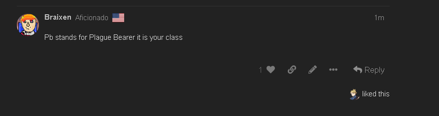

i don’t think the first one is a day occ.
however i didn’t see the 2nd one
PB then
Yeah I don’t think the 1st one is but it might be.
Still doesn’t change the fact that, despite me being Hunter, dontcha think you would ya know, read up on the evil classes I can be?
I don’t understand what this means
Pb stands for Plague Bearer it is your class
1 Like
I did read up on the evils you could be
p sure marshall is town dudes
but if braixen flips town I want to re-evaluate the slot
and either way why would i not just… occ italy if i am lying about having day occ.
like… ?
the fact that it didn’t happen makes me think it’s cult game for sure which makes me suspect wazz even more
 ruh braixen is flipping town dingus
ruh braixen is flipping town dingus
Guys chloe just liked the message saying that she was plague beared 
So I give you a chance to persuade me and others to take my vote off you. Now you’re shading me as SS? Nice work.

The reasons were basically in this post and I remember Vulgard saying something about it too. I agree with the points here, it could very easily be distancing between you and Braix so I think using Court Spies on you is not bad here.
PB doesn’t exist lol
uHHH reaction test hella failed
Yet you somehow missed that Assassin can dayocc?
Yeah, right.
actually wait why did nobody mention this
wouldn’t italy be day occed if unseen game?
???
guyss
Reaction test hella failed
oh i thought it was an NK like in ToS